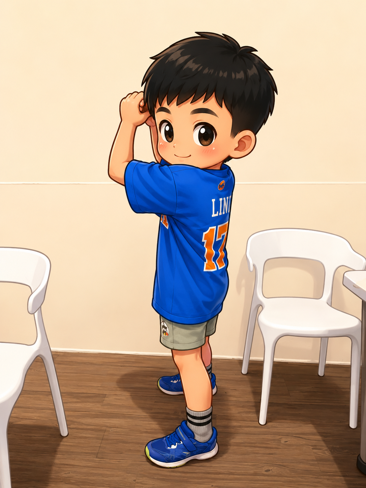
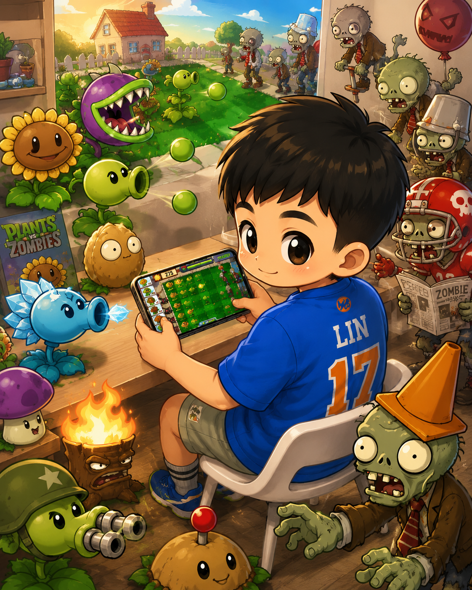
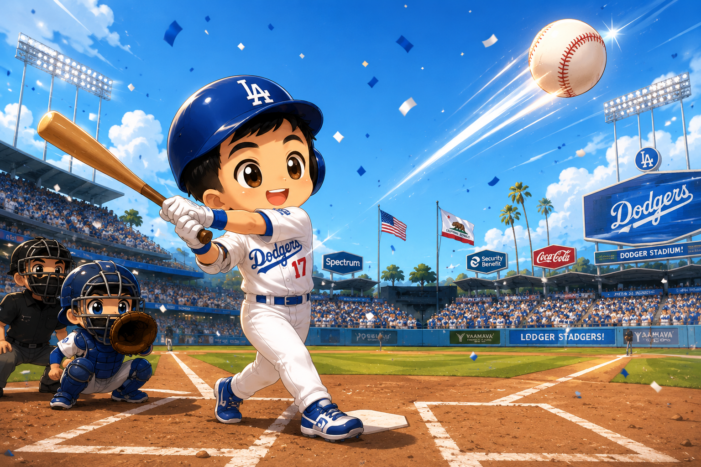

👋 哈囉！我是 Le
歡迎來到我的個人網站！我叫做Le，現在是四年級。平常下課會去綜合球場打棒球，放假最喜歡出國玩，最愛的卡通是植物大戰殭屍，最喜歡的運動棒球，我的偶像是江坤宇，因為他守備很強，最愛吃的美食泡麵。
✨ 關於我的小祕密

🎮 我最喜歡的事
我最喜歡在放假時打電腦遊戲，尤其是植物大戰殭屍！最喜歡的角色是寒冰射手，最愛的遊戲模式是保齡球打殭屍模式。

⚾️ 我最喜歡的運動
除了坐在電腦前玩遊戲，我還喜歡出去和同學們一起打棒球，守備上我通常負責防守1壘，進攻上我希望我可以像大谷翔平一樣打得很遠。
🍜 我最愛的食物
跟白飯比起來，我最喜歡吃麵類食物，包括泡麵、意麵、拉麵、烏龍麵。